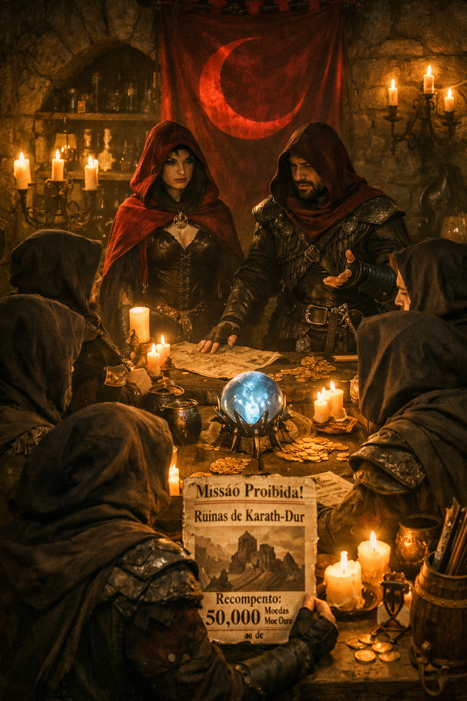
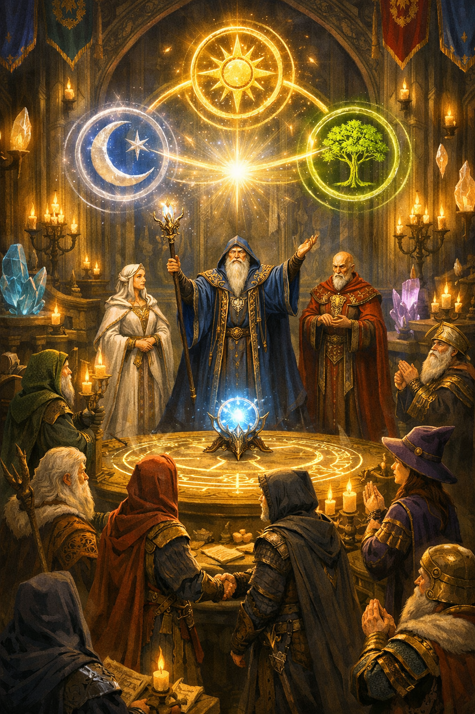
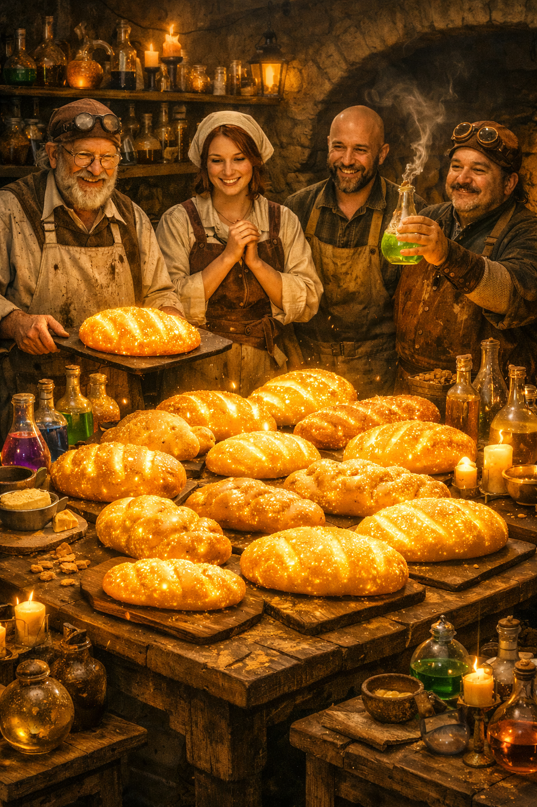

Guilda da Lua Carmesim recruta aventureiros para missão proibida!

A misteriosa Guilda da Lua Carmesim publicou um anúncio oferecendo uma recompensa absurda
para aventureiros dispostos a explorar as ruínas de Karath-Dur, uma fortaleza abandonada há mais de 300 anos.
Segundo rumores, a guilda procura um artefato conhecido apenas como “O Coração da Tempestade”, capaz de controlar fenômenos climáticos mágicos.
Guilda dos Mestres da Magia anuncia nova era de cooperação.

A Guilda dos Mestres da Magia anunciou uma nova era de cooperação com outras guildas, prometendo avanços significativos no campo da magia e no bem-estar dos habitantes do reino.
Guilda dos Alquimistas cria pão que brilha no escuro.

A Guilda dos Alquimistas revelou um novo alimento mágico capaz de permanecer quente por dias. Apesar do sucesso inicial, alguns consumidores afirmam que o pão continua brilhando mesmo após ser digerido.